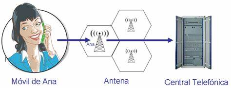

Introducción
La red es un sistema de comunicación que permite la interconexión de diferentes dispositivos, facilitando el intercambio de datos y recursos.

Cómo Funciona
Las redes funcionan mediante la transmisión de datos a través de cables o señales inalámbricas. Los dispositivos en una red se comunican utilizando protocolos específicos para asegurar que la información llegue a su destino de manera precisa.
Tipos de Redes
- Red de Área Local (LAN): Red que cubre un área pequeña, como una oficina o un hogar.
- Red de Área Amplia (WAN): Red que abarca grandes distancias, como la conexión entre ciudades o países.
- Red de Área Metropolitana (MAN): Red que cubre una ciudad o una gran área metropolitana.
- Red Personal (PAN): Red para conectar dispositivos personales en un área pequeña, como un teléfono y una computadora.
Referencias
- Tanenbaum, A. S. (2011). Redes de Computadoras. Pearson.
- Forouzan, B. A. (2012). Fundamentos de Redes de Datos. McGraw-Hill.
- Kurose, J. F., & Ross, K. W. (2016). Redes de Computadoras y Sistemas de Comunicación. Pearson.